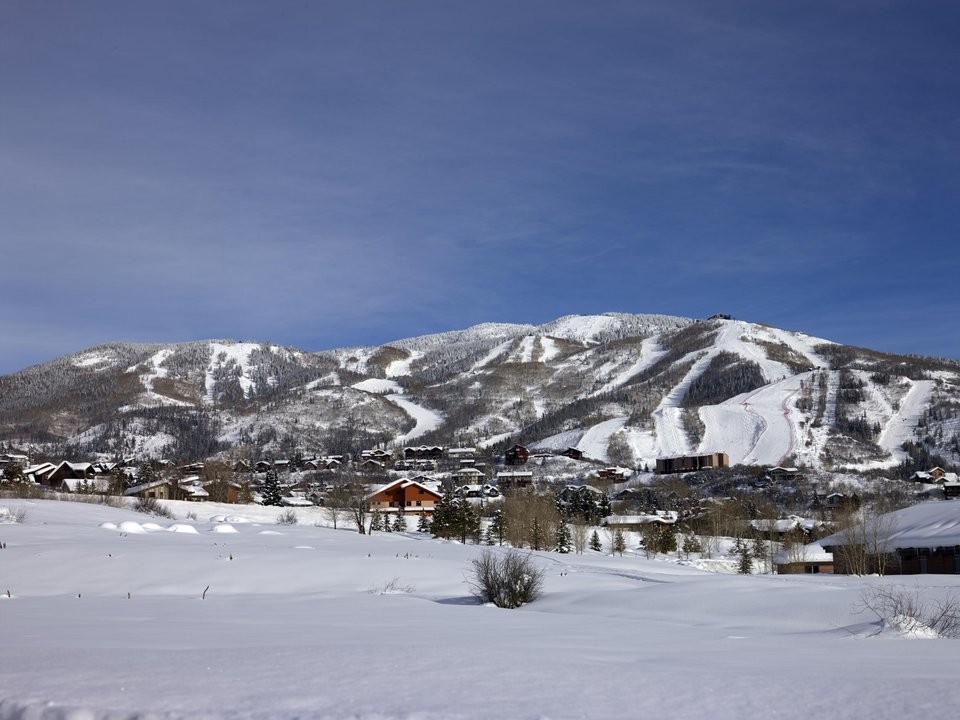

Ski base · Resort hotel
The Steamboat Grand
A full-service hotel with a pool and spa, steps from the gondola.
Official details for The Steamboat GrandHot springs and a real cow town.
Steamboat Springs is still a ranching town as much as a ski resort, with Western storefronts on Lincoln Avenue and more than 150 natural hot springs around it. Land at Bob Adams Field, a mile from downtown, soak by lantern at Strawberry Park Hot Springs in the forest, hike to 283-foot Fish Creek Falls, and ride the gondola up Mount Werner. Winter brings the famous light “champagne powder.”

Time illustration: direct distance at 150 KTAS plus 15 minutes for departure and arrival, matching the discovery page. Use ForeFlight for your actual flight plan.
KSBS, Steamboat Springs/Bob Adams Field, is a non-towered city airport at 6,882 feet with a 4,452-foot runway, about five minutes from downtown.
Bob Adams Field, Steamboat Springs, CO
A short runway at high elevation: compute performance carefully, especially on summer afternoons. Yampa Valley Regional (KHDN), 25 miles west, has a 10,000-foot runway. No landing fee for single-engine pistons. No live fuel price is shown.
Mountain flying: high density altitude on summer afternoons, mountain wave and strong winds over the ridges, afternoon thunderstorms from July to September, and winter snow and icing. Consider a mountain-flying course before you go. About 1390 nm from Myrtle Beach: two long days each way with several fuel stops. Plan a week, or overnight on the way out and back.
Rates and availability need travel dates. Book ski weeks early.
A full-service hotel with a pool and spa, steps from the gondola.
Official details for The Steamboat GrandSlopeside residences at the gondola.
Official details for One Steamboat PlaceA family-run motel with a famous neon rabbit sign, across from Old Town Hot Springs.
Official details for Rabbit Ears MotelAn all-inclusive luxury guest ranch with riding, about 25 miles north.
Official details for Vista Verde RanchA luxury guest ranch on the Elk River in Clark.
Official details for The Home RanchHotels, condos and lodges.
Steamboat Chamber for More places to stayReserve weekend dinners.
Seasonal cooking near the gondola.
Official details for Café DivaShared plates and cocktails in a 1910 laundry building downtown.
Official details for The LaundryRestaurants downtown and at the mountain.
Steamboat Chamber for More restaurantsReserve Strawberry Park ahead.
This prototype links to the local visitor site. It does not yet match events to your travel dates.
A rodeo and parade.
Steamboat Chamber for Cowboys’ Roundup DaysHiking, rivers and hot springs.
Steamboat Chamber for Summer in the mountainsChampagne powder on Mount Werner.
Steamboat Resort for Ski seasonCheck the local calendar when choosing a weekend, and confirm dates and tickets with the organizer.
A sample Steamboat weekend. This is a two-day flight each way; plan a week. No bookings or availability confirmed.
Land at KSBS mid-morning.
Lunch on Lincoln Avenue.
Fish Creek Falls, then back to the airport.
Land at KSBS, subject to weather, density altitude and your actual flight plan.
Walk Lincoln Avenue and Old Town Hot Springs.
Dinner at The Laundry.
Hike to Fish Creek Falls.
The gondola up Mount Werner.
Dinner at Café Diva.
Strawberry Park Hot Springs.
Compute takeoff performance for the morning temperature and allow time at the FBO.
Mountain afternoons bring wind, turbulence and storms; leave early.
Strawberry Park Hot Springs.
The gondola up Mount Werner.
Dinner at Café Diva.
These details make the difference between an appealing list and a usable getaway.
Lodging and hot-springs reservations first.
About 1,390 nm: two days each way.
4,452 feet at 6,882 feet elevation; plan for KHDN if needed.
June to September, and ski season for experienced winter pilots.
Picks and links reviewed by WingAway Weekends. Hours, prices, menus and availability change often, so confirm directly with each place before booking. Spotted something out of date, or have a favorite we missed? Email us at hello@wingawayweekends.com.
WingAway Weekends helps you discover the destination. Use ForeFlight and current official aviation information for route, performance, weather, NOTAMs and preflight decisions. Flight planning and PIC responsibility stay with the pilot.